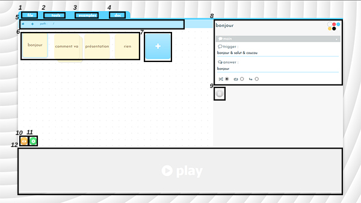

Miaou est un éditeur de chatbot. Il permet de créer et modifier un chatbot en passant par une interface graphique
Petit tour de l'interface

Le menu déroulant file, fermet d'effacer le travail en cours via le bouton new, de télécharger le projet via le bouton download ou d'ouvrir un chatbot enregistré via le bouton open.
Le menu déroulant tools permet de sélectionner les paramètre qui apparaissent dans la zone 8.
Le menu déroulant examples permet d'ouvrir des exemples qui se veulent utiles à la compréhension de miaou.
Si vous êtes ici c'est que vous avez deviné.
La barre de navigation permet de savoir à quel niveau de l'arborescence on se trouve et de naviguer dans l'arborescence.
C'est ici que se trouve les boîtes. Cliquez sur l'une d'entre elle pour la modifier.
Cliquez ici pour créer une nouvelle boîte.
Cet espace permet de modifier les paramètres de la boîte sélectionnée.
Cliquez ici pour supprimer la boîte sélectionnée.
Ce bouton donne accès au mode CSS, depuis lequel vous pourrez choisir parmis les apparences disponibles ou en créer une nouvelle.
Ce bouton donne accès aux paramètres généraux du bot.
En cliquant sur PLAY vous aurez accès à une console permettant d'essayer le chatbot en cours.
Raccourcis claviers
Les flèches directionnelles permettent de se déblacer dans les boîtes.
La touche Entrée permet d'entrer dans une boîte.
La touche Retour permet, avec la plupart des navigateurs, de revenir au niveau supérieur de l'arborescence.
la touche n permet de créer une nouvelle boîte.
la touche Suppr permet de supprimer la boîte sélectionnée.
CTRL + CCTRL + XCTRL + V permettent de copier, couper et coller une boîte. Attention les liens des boîtes ne sont pas copiés.